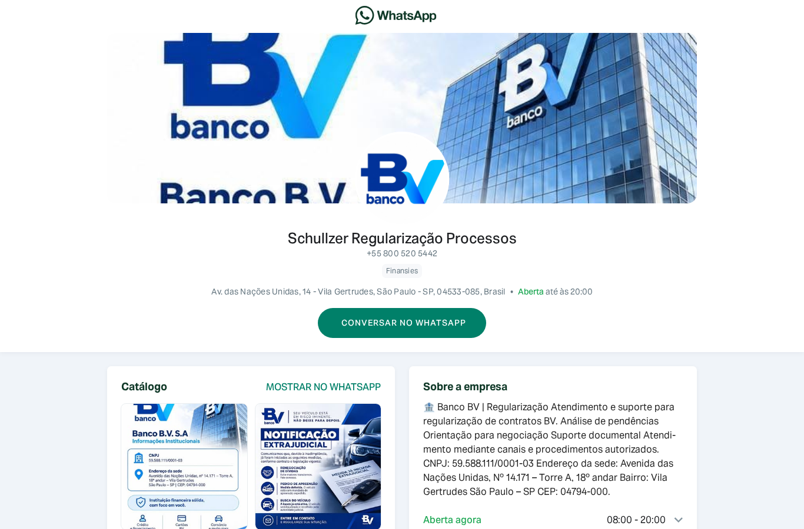
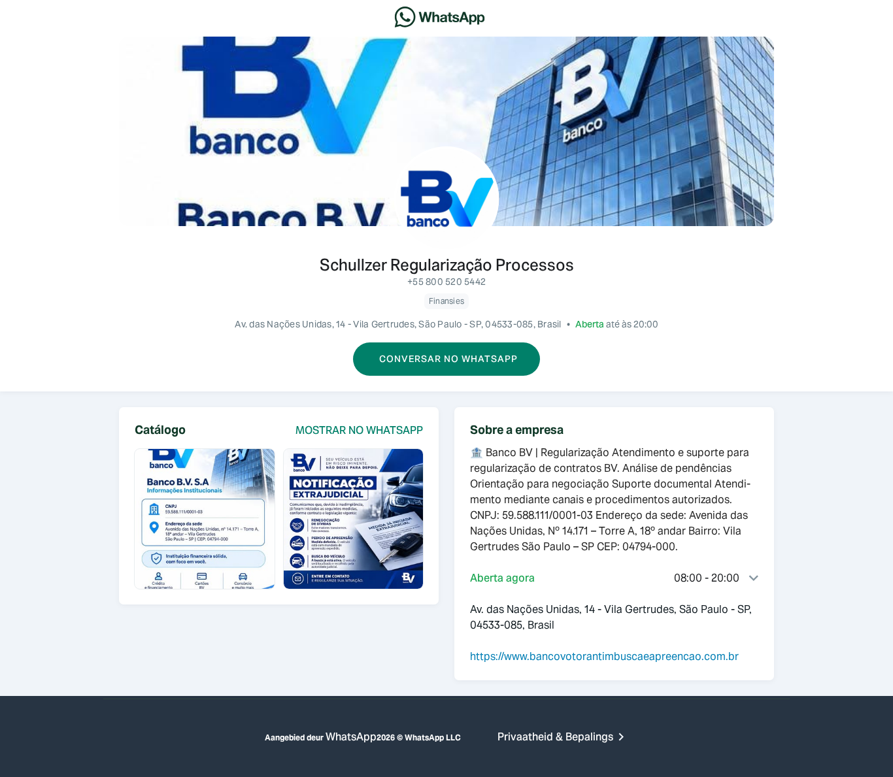

Sistema de Investigação de Marca e Identidade Online
https://wa.me/schullzerregularizaoprocessos?lang=af_ZA
Prioridade: HIGH · Cenário: D_STRONG_IMPERSONATION · Revisão humana: PENDING
O canal analisado apresenta indícios inequívocos de falsa oficialidade e forte personificação (impersonation) do Banco BV. Ao usurpar o CNPJ institucional da matriz do banco (59.588.111/0001-03), seu endereço físico e seu logotipo moderno, o perfil simula ser o canal oficial de cobrança e regularização de contratos do Banco BV, direcionando usuários para um domínio externo suspeito de busca e apreensão. Trata-se de grave desvio de marca e infração regulatória direta à Resolução CMN nº 4.935/2021. [Revisor: CONFIRM] Confirma-se integralmente a hipótese do analista. O perfil no WhatsApp da entidade 'Schullzer Regularização Processos' atua na intermediação/regularização de contratos de veículos e busca e apreensão, utilizando de forma ostensiva e abusiva o logotipo e identidade visual do Banco BV (E-SHOT-VIEWPORT, E-SHOT-FULL). Além disso, apropria-se do CNPJ (59.588.111/0001-03) e do endereço oficial da matriz da instituição para simular oficialidade, ocultando dados cadastrais próprios e violando frontalmente a Resolução CMN nº 4.935/2021. Configura forte indício de irregularidade com alto risco ao consumidor.


| Ref | Tipo | Local | Conteúdo |
|---|---|---|---|
| E-URL | domain | url | URL final: https://wa.me/schullzerregularizaoprocessos?lang=af_ZA (domínio: wa.me) |
| E-DISC-001 | text | search_index | Índice de busca (grounding): wa.me — **Nome / Perfil:** Banco BV | Regularização | **URL / Link WhatsApp:** `https://wa.me` (Perfil verificado em listagem de atendimento WhatsApp) | **Uso da Marca:** Apresenta-se com o título *"Banco BV | Regularização - Atendimento e suporte para regularização de contratos BV"*, atuando em análise de pendências, negociação e suporte documental | O perfil apropria-se do CNPJ oficial do Banco BV (59.588.111/0001-03) e do endereço da sede corporativa (Av. das Nações Unidas, 14.171, Torre A) para simular canal oficial do banco | O perfil apropria-se do CNPJ oficial do Banco BV (59.588.111/0001-03) e do endereço da sede corporativa (Av. das Nações Unidas, 14.171, Torre A) para simular canal oficial do banco, omitindo completamente a razão social da assessoria/empresa terceirizada que de fato opera a linha telefônica |
| E-DISC-002 | text | search_index | Índice de busca (grounding): wa.me — **Nome do Estabelecimento / Perfil:** "Banco BV | Regularização" | **URL:** Perfil no WhatsApp (`wa.me` com identificação comercial "Banco BV | Regularização") | Atendimento mediante canais e procedimentos autorizados"* | O perfil exibe a razão social e o CNPJ da sede do próprio Banco BV (59.588.111/0001-03) e seu endereço institucional (Av. das Nações Unidas, Torre A) para induzir os clientes a crerem que estão falando com o próprio banco |
| E-SHOT-VIEWPORT | screenshot | viewport | evidence/Cb843be7ce9/attempt-1/viewport.png (sha256 c4626b050792eb3f…) |
| E-SHOT-FULL | screenshot | page | evidence/Cb843be7ce9/attempt-1/fullpage.png (sha256 4d44af561245ea6e…) |
| E-TITLE | title | head | Schullzer Regularização Processos op WhatsApp | Finansies | 🏦 Banco BV | Regularização Atendimento e suporte... | Av. das Nações Unidas, 14 - Vila Gertrudes, São Paulo - SP, 04533-085, Brasil | +55... |
| E-META-1 | meta | head | description: 🏦 Banco BV | Regularização Atendimento e suporte para regularização de contratos BV. Análise de pendências Orientação para negociação Suporte documental Atendimento mediante canais e procedimentos autorizados. CNPJ: 59.588.111/0001-03 Endereço da sede: Avenida das Nações Unidas, Nº 14.171 – Torre A, 18º andar Bairro: Vila Gertrudes São Paulo – SP CEP: 04794-000. |
| E-META-2 | meta | head | og:site_name: WhatsApp.com |
| E-META-3 | meta | head | og:title: Schullzer Regularização Processos op WhatsApp | Finansies | 🏦 Banco BV | Regularização Atendimento e suporte... | Av. das Nações Unidas, 14 - Vila Gertrudes, São Paulo - SP, 04533-085, Brasil | +55... |
| E-META-4 | meta | head | og:description: 🏦 Banco BV | Regularização Atendimento e suporte para regularização de contratos BV. Análise de pendências Orientação para negociação Suporte documental Atendimento mediante canais e procedimentos autorizados. CNPJ: 59.588.111/0001-03 Endereço da sede: Avenida das Nações Unidas, Nº 14.171 – Torre A, 18º andar Bairro: Vila Gertrudes São Paulo – SP CEP: 04794-000. |
| E-CANONICAL | meta | head | https://wa.me/schullzerregularizaoprocessos?lang=af |
| E-HEAD-1 | heading | page | Schullzer Regularização Processos |
| E-HEAD-2 | heading | page | Catálogo |
| E-HEAD-3 | heading | page | Sobre a empresa |
| E-FOLD | text | viewport (acima da dobra) | Schullzer Regularização Processos +55 800 520 5442 Finansies Av. das Nações Unidas, 14 - Vila Gertrudes, São Paulo - SP, 04533-085, Brasil • Aberta até às 20:00 Conversar no WhatsApp Catálogo MOSTRAR NO WHATSAPP Sobre a empresa 🏦 Banco BV | Regularização Atendimento e suporte para regularização de contratos BV. Análise de pendências Orientação para negociação Suporte documental Atendimento mediante canais e procedimentos autorizados. CNPJ: 59.588.111/0001-03 Endereço da sede: Avenida das Nações Unidas, Nº 14.171 – Torre A, 18º andar Bairro: Vila Gertrudes São Paulo – SP CEP: 04794-000. Aberta agora 08:00 - 20:00 |
| E-FTR | text | footer | Aangebied deur WhatsApp2026 © WhatsApp LLC Privaatheid & Bepalings |
| E-CONTACT-1 | contact | page | CONVERSAR NO WHATSAPP <https://web.whatsapp.com/send?lang=af_ZA&phone=558005205442&entry_point=wa_pages&type=custom_url> |
| E-CONTACT-2 | contact | page | MOSTRAR NO WHATSAPP <https://web.whatsapp.com/catalog/558005205442> |
| E-CONTACT-3 | contact | page | notificação <https://web.whatsapp.com/send?lang=af_ZA&phone=558005205442&entry_point=wa_pages&type=custom_url&text=https%3A%2F%2Fwa.me%2Fp%2F38764877009825180%2F558005205442> |
| E-CONTACT-4 | contact | page | extrajudicial <https://web.whatsapp.com/send?lang=af_ZA&phone=558005205442&entry_point=wa_pages&type=custom_url&text=https%3A%2F%2Fwa.me%2Fp%2F38753763327603935%2F558005205442> |
| E-CONTACT-5 | contact | footer | WhatsApp <https://www.whatsapp.com/> |
| E-CONTACT-6 | contact | footer | Privaatheid & Bepalings <https://www.whatsapp.com/legal/> |
| E-IMG-1 | image | header (acima da dobra) | imagem alt='WhatsApp logo and text' src=https://static.xx.fbcdn.net/rsrc.php/y0/r/V9xoCe-F-Xe.svg (139x32, acima da dobra) |
| E-TXT-001 | text | page | CONVERSAR NO WHATSAPP |
| E-TXT-002 | text | page | MOSTRAR NO WHATSAPP |
| E-TXT-003 | text | page | 🏦 Banco BV | Regularização Atendimento e suporte para regularização de contratos BV. Análise de pendências Orientação para negociação Suporte documental Atendimento mediante canais e procedimentos autorizados. CNPJ: 59.588.111/0001-03 Endereço da sede: Avenida das Nações Unidas, Nº 14.171 – Torre A, 18º andar Bairro: Vila Gertrudes São Paulo – SP CEP: 04794-000. |
| E-TXT-004 | text | page | https://www.bancovotorantimbuscaeapreencao.com.br |
| E-TXT-005 | text | page | Aangebied deur WhatsApp2026 © WhatsApp LLC |
| Dimensão | Sinal | Achado | Refs |
|---|---|---|---|
| DECLARED_COMMERCIAL_IDENTITY | CONFUSION | Uso direto do CNPJ institucional (59.588.111/0001-03) e endereço da sede do Banco BV para ocultar a verdadeira entidade operadora da linha WhatsApp. | E-META-1 E-TXT-003 E-FOLD |
| VISUAL_IDENTITY | CONFUSION | Arte do cabeçalho e avatar dominados pela tipografia, cores e fachada corporativa com a marca do Banco BV. | E-SHOT-VIEWPORT E-SHOT-FULL |
| LOGO_USAGE | CONFUSION | Logotipo oficial contemporâneo 'bv banco' aplicado repetidamente sem chancela de parceria ou autorização de uso de marca. | E-SHOT-VIEWPORT E-SHOT-FULL |
| CORRESPONDENT_TRANSPARENCY | CONFUSION | Ausência total de declaração de correspondente bancário nos termos da Resolução CMN nº 4.935/2021. | E-FOLD E-TXT-003 |
| INSTITUTIONAL_LANGUAGE | CONFUSION | Discurso em 1ª pessoa institucional prestando suposto atendimento de contratos e regularização de pendências em nome do Banco BV. | E-META-1 E-TXT-003 |
| SERVICE_JOURNEY | CONFUSION | Direcionamento para renegociação e suposta busca e apreensão de veículos via WhatsApp e domínio externo não oficial. | E-CONTACT-1 E-TXT-004 E-SHOT-VIEWPORT |
| CONTACT_CHANNELS | CONFUSION | Canal de WhatsApp sob número 0800 simulando atendimento corporativo do banco sem pertencer aos canais oficiais. | E-CONTACT-1 E-FOLD |
| CONSUMER_CONFUSION | CONFUSION | Severo risco de engano do consumidor, induzido a acreditar que está negociando e quitando contratos diretamente com o Banco BV. | E-DISC-001 E-TXT-003 E-SHOT-VIEWPORT |
O canal analisado apresenta indícios inequívocos de falsa oficialidade e forte personificação (impersonation) do Banco BV. Ao usurpar o CNPJ institucional da matriz do banco (59.588.111/0001-03), seu endereço físico e seu logotipo moderno, o perfil simula ser o canal oficial de cobrança e regularização de contratos do Banco BV, direcionando usuários para um domínio externo suspeito de busca e apreensão. Trata-se de grave desvio de marca e infração regulatória direta à Resolução CMN nº 4.935/2021.
Nenhum CNPJ ou razão social identificáveis no conteúdo coletado.
| Tipo | Valor | Ref | Contexto |
|---|---|---|---|
| domain | wa.me | E-URL | |
| cnpj | 59.588.111/0001-03 | E-DISC-001 | , atuando em análise de pendências, negociação e suporte documental | O perfil apropria-se do CNPJ oficial do Banco BV (59.588.111/0001-03 |
| cnpj | 2F.558.005/2054-42 (dígito inválido) | E-CONTACT-3 | end?lang=af_ZA&phone=558005205442&entry_point=wa_pages&type=custom_url&text=https%3A%2F%2Fwa.me%2Fp%2F38764877009825180%2F558005205442 |
| trade_name | WhatsApp.com | E-META-2 | |
| Índice de busca (grounding): wa.me — **Nome / Perfil:** Banco BV | Regularização | **URL / Link WhatsApp:** `https://wa.me` (Perfil verificado em listagem de atendimento WhatsApp) | **Uso da Marca:** | E-DISC-001 | ||
| Índice de busca (grounding): wa.me — **Nome do Estabelecimento / Perfil:** "Banco BV | Regularização" | **URL:** Perfil no WhatsApp (`wa.me` com identificação comercial "Banco BV | Regularização") | A | E-DISC-002 | ||
| CONVERSAR NO WHATSAPP <https://web.whatsapp.com/send?lang=af_ZA&phone=558005205442&entry_point=wa_pages&type=custom_url> | E-CONTACT-1 | ||
| MOSTRAR NO WHATSAPP <https://web.whatsapp.com/catalog/558005205442> | E-CONTACT-2 | ||
| notificação <https://web.whatsapp.com/send?lang=af_ZA&phone=558005205442&entry_point=wa_pages&type=custom_url&text=https%3A%2F%2Fwa.me%2Fp%2F38764877009825180%2F558005205442> | E-CONTACT-3 |
Mapeamento indicativo para apoio à auditoria. Não constitui conclusão regulatória; a decisão definitiva pertence à auditoria.
Fonte: NORMATIVE
Art. 14. O contrato de correspondente deve estabelecer: [...] II - vedação à utilização, pelo contratado, de logomarca ou de outros atributos que sejam similares aos adotados pela instituição contratante em suas agências, postos de atendimento, sítio eletrônico na internet, aplicativo ou outras plataformas de comunicação em rede;
Hipótese: Uso de logomarca, uso excessivo/desproporcional ou de atributos similares aos adotados pela contratante em seus canais. A norma disciplina correspondentes contratados; o responsável não foi identificado como correspondente.
Evidência observada: E-SHOT-FULL E-SHOT-VIEWPORT
Informação faltante:
Fonte: NORMATIVE
Art. 14. O contrato de correspondente deve estabelecer: [...] III - divulgação ao público, pelo contratado, de sua condição de prestador de serviços à instituição contratante, identificada pelo nome com que é conhecida no mercado, com descrição dos produtos e serviços oferecidos e canais de contato da instituição contratante, inclusive de sua ouvidoria, em local visível, em destaque e em formato legível, por meio de: a) sítio eletrônico do correspondente na internet, acessível na página inicial; b) aplicativo e outras plataformas de comunicação em rede do correspondente; [...]
Hipótese: Divulgação ao público da condição de prestador de serviços/parceria ausente, insuficiente, ambígua ou sem destaque. A norma disciplina correspondentes contratados; o responsável não foi identificado como correspondente.
Evidência observada: E-CONTACT-1 E-DISC-001 E-DISC-002 E-FOLD E-META-1 E-SHOT-VIEWPORT E-TXT-003 E-TXT-004
Informação faltante:
Fonte: NORMATIVE
Art. 3º O correspondente atua por conta e sob as diretrizes da instituição contratante, que assume inteira responsabilidade pelo atendimento prestado aos clientes e usuários por meio do contratado.
Hipótese: Atendimento ao público prestado por meio do contratado em condições que podem não seguir as diretrizes da contratante. A norma disciplina correspondentes contratados; o responsável não foi identificado como correspondente.
Evidência observada: E-CONTACT-1 E-FOLD E-SHOT-VIEWPORT E-TXT-004
Informação faltante:
Se o responsável não for correspondente contratado, os indícios podem caracterizar uso indevido de marca ou fraude, fora do escopo da Res. 4.935: avaliar encaminhamento às áreas jurídica/segurança.
Limitações: requisitos contratuais/internos não fornecidos: mapeamento limitado ao texto normativo
Decisão: CONFIRM → STRONG_INDICATION / HIGH
Confirma-se integralmente a hipótese do analista. O perfil no WhatsApp da entidade 'Schullzer Regularização Processos' atua na intermediação/regularização de contratos de veículos e busca e apreensão, utilizando de forma ostensiva e abusiva o logotipo e identidade visual do Banco BV (E-SHOT-VIEWPORT, E-SHOT-FULL). Além disso, apropria-se do CNPJ (59.588.111/0001-03) e do endereço oficial da matriz da instituição para simular oficialidade, ocultando dados cadastrais próprios e violando frontalmente a Resolução CMN nº 4.935/2021. Configura forte indício de irregularidade com alto risco ao consumidor.
| Tema | Severidade | Questionamento | Refs |
|---|---|---|---|
| domain_attribution | MEDIUM | Responsável pela página não identificado; a conclusão sobre a marca não pode ser atribuída a um estabelecimento específico. | E-URL |
| Fonte | Consulta / hipótese | URL original | Título / trecho |
|---|---|---|---|
| grounding | Objetivo: Links e páginas de captação via WhatsApp (wa.me) utilizando a marca.
Execute no Google Search as seguintes consultas (dorks):
- ("wa.me" OR "api.whatsapp.com") ("Banco BV" OR "bv financeira") (financiamento OR correspondente OR veículos OR consignado OR empréstimo) -site:bv.com.br -site:bancobv.com.br -site:bvfinanceira.com.br -site:bvinvestimentos.com.br -site:napista.com.br -site:bvopen.com.br -site:meufinanciamentosolar.com.br -site:votorantim.com.br -site:vam.com.br -site:reclameaqui.com.br -site:jusbrasil.com.br -site:jus.br
- ("linktr.ee" OR "linkme.bio" OR "heylink.me") ("Banco BV" OR "bv financeira") -site:bv.com.br -site:bancobv.com.br -site:bvfinanceira.com.br -site:bvinvestimentos.com.br -site:napista.com.br -site:bvopen.com.br -site:meufinanciamentosolar.com.br -site:votorantim.com.br -site:vam.com.br -site:reclameaqui.com.br -site:jusbrasil.com.br -site:jus.br
Liste de forma abrangente as páginas públicas encontradas (até 12 resultados distintos), informando para cada uma o nome do estabelecimento/perfil, a URL e como a marca é utilizada (destaque visual, título, feirão, simulador, redes sociais e se há ou não identificação clara de CNPJ e condição de correspondente bancário). H6-platform:WhatsApp | https://wa.me/schullzerregularizaoprocessos?lang=af_ZA | wa.me **Nome / Perfil:** Banco BV | Regularização | **URL / Link WhatsApp:** `https://wa.me` (Perfil verificado em listagem de atendimento WhatsApp) | **Uso da Marca:** Apresenta-se com o título *"Banco BV | Regularização - Atendimento e suporte para regularização de contratos BV"*, atuando em análise de pendências, negociação e suporte documental | O perfil apropria-se do CNPJ oficial do Banco BV (59.588.111/0001-03) e do endereço da sede corporativa (Av. das Nações Unidas, 14.171, Torre A) para simular canal oficial do banco | O perfil apropria-se do CNPJ oficial do Banco BV (59.588.111/0001-03) e do endereço da sede corporativa (Av. das Nações Unidas, 14.171, Torre A) para simular canal oficial do banco, omitindo completamente a razão social da assessoria/empresa terceirizada que de fato opera a linha telefônica |
| grounding | Objetivo: Páginas de terceiros com combosquatting ou simuladores se passando por canais de contratação ou login.
Execute no Google Search as seguintes consultas (dorks):
- (intitle:"Banco BV" OR intitle:"bv financeira") (intitle:"simulador" OR intitle:"login" OR intitle:"portal" OR intitle:"atendimento") -site:bv.com.br -site:bancobv.com.br -site:bvfinanceira.com.br -site:bvinvestimentos.com.br -site:napista.com.br -site:bvopen.com.br -site:meufinanciamentosolar.com.br -site:votorantim.com.br -site:vam.com.br -site:reclameaqui.com.br -site:jusbrasil.com.br -site:jus.br
- (inurl:bancobv OR inurl:bvfinanceira OR inurl:bv-credito OR inurl:bv-online) (simulacao OR portal OR login OR acesso OR proposta) -site:bv.com.br -site:bancobv.com.br -site:bvfinanceira.com.br -site:bvinvestimentos.com.br -site:napista.com.br -site:bvopen.com.br -site:meufinanciamentosolar.com.br -site:votorantim.com.br -site:vam.com.br -site:reclameaqui.com.br -site:jusbrasil.com.br -site:jus.br
Liste de forma abrangente as páginas públicas encontradas (até 12 resultados distintos), informando para cada uma o nome do estabelecimento/perfil, a URL e como a marca é utilizada (destaque visual, título, feirão, simulador, redes sociais e se há ou não identificação clara de CNPJ e condição de correspondente bancário). H7-threat-intel:combosquatting-portals | https://wa.me/schullzerregularizaoprocessos?lang=vi_VN | wa.me **Nome do Estabelecimento / Perfil:** "Banco BV | Regularização" | **URL:** Perfil no WhatsApp (`wa.me` com identificação comercial "Banco BV | Regularização") | Atendimento mediante canais e procedimentos autorizados"* | O perfil exibe a razão social e o CNPJ da sede do próprio Banco BV (59.588.111/0001-03) e seu endereço institucional (Av. das Nações Unidas, Torre A) para induzir os clientes a crerem que estão falando com o próprio banco |
Original: https://wa.me/schullzerregularizaoprocessos?lang=af_ZA
Final: https://wa.me/schullzerregularizaoprocessos?lang=af_ZA
| Artefato | Caminho | SHA-256 | Bytes |
|---|---|---|---|
| screenshot_viewport | evidence/Cb843be7ce9/attempt-1/viewport.png | c4626b050792eb3f97c25bed0bb8c1c6e6722a20d16c4c2a94dc002f49c7168f | 566659 |
| screenshot_full | evidence/Cb843be7ce9/attempt-1/fullpage.png | 4d44af561245ea6e565b6e08ec076a84eedb6886748d9fb5446de80d9b990469 | 588838 |
| html | evidence/Cb843be7ce9/attempt-1/page.html.txt | bbfb9fbd67740f781420806628e6d1eee0b2d321ee0a8b3115ef17858561475b | 149555 |
| text | evidence/Cb843be7ce9/attempt-1/text.txt | 89579e9c37c3c136943d0dc75bade58158f001316aae22c53e22f58238ce5cbf | 849 |
| page_data | evidence/Cb843be7ce9/attempt-1/page.json | dc1f7d5e84c997684f036500abef07adb918366cf372590daece34ba4009ba88 | 8256 |
| Quando | De | Para | Nota |
|---|---|---|---|
| 2026-11-25T18:12:00+00:00 | DISCOVERED | QUEUED | prioritised (score 6.5) |
| 2026-11-25T18:13:35+00:00 | QUEUED | COLLECTING | |
| 2026-11-25T18:13:41+00:00 | COLLECTING | COLLECTED | |
| 2026-11-25T18:13:41+00:00 | COLLECTED | ANALYZING | |
| 2026-11-25T18:14:01+00:00 | ANALYZING | REVIEWING | |
| 2026-11-25T18:14:08+00:00 | REVIEWING | COMPLETED |